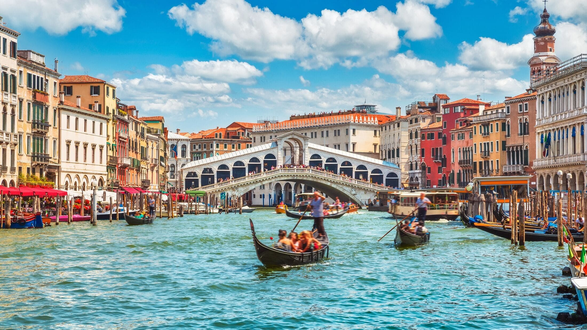
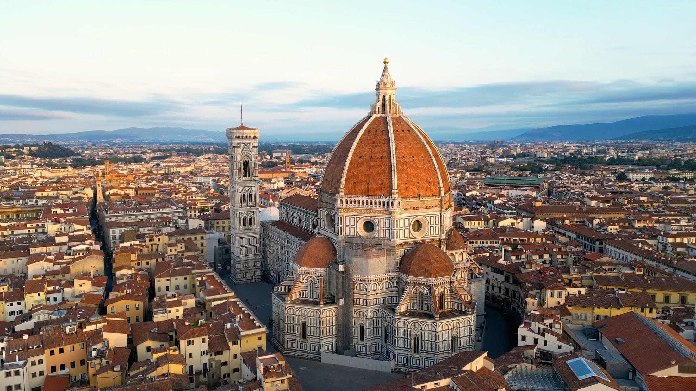
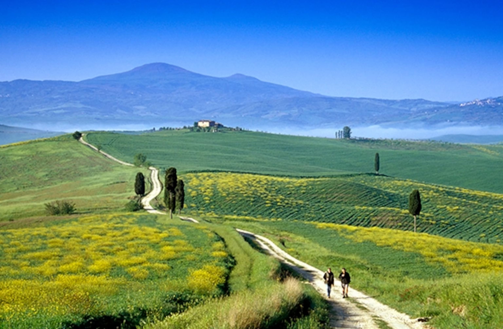

Italy - La Bella Italia: Art, History, and Cuisine

Introduction
Italy is a country of rich history, world-class art, stunning landscapes, and delicious cuisine. From the ruins of Rome to the canals of Venice and the rolling hills of Tuscany, Italy has something for every traveler. Its cities are filled with museums, historic monuments, and cultural experiences that span millennia.
Visitors can explore ancient Roman architecture, Renaissance masterpieces, medieval towns, and picturesque countryside. Italy’s diverse regions each offer unique experiences, combining modern life with deep cultural traditions. Its food, wine, and festivals make the country an unforgettable destination.
Quick Facts
- Capital: Rome
- Population: Approximately 60 million
- Language: Italian
- Currency: Euro
- Best Time to Visit: April-June and September-October
Explore Major Destinations
Jump to a specific destination
\r\n
Rome
Region: Lazio
Rome, the Eternal City, is Italy’s capital and a center of art, history, and culture. It is home to landmarks like the Colosseum, the Roman Forum, and the Pantheon, showcasing over 2,000 years of history.
Visitors can stroll through piazzas, admire Renaissance fountains, and explore Vatican City, including St. Peter’s Basilica and the Sistine Chapel. Rome combines ancient ruins, vibrant street life, and world-class cuisine in a single unforgettable city.
Must-See Attractions
- Colosseum - Ancient amphitheater and iconic Roman landmark
- Vatican Museums - World-class art collection including Sistine Chapel
- Trevi Fountain - Baroque fountain where tradition says to throw a coin
- Pantheon - Remarkably preserved ancient Roman temple
- Roman Forum - Heart of ancient Roman public life
Back to top
Venice

Region: Veneto
Venice is a city of canals, bridges, and historic architecture. Built on 118 small islands, it is famous for its gondolas, romantic waterways, and Renaissance and Gothic buildings.
Explore St. Mark’s Basilica, the Doge’s Palace, and the Rialto Bridge. Venice’s vibrant squares, art-filled churches, and charming neighborhoods provide a unique cultural experience unlike any other city in the world.
Must-See Attractions
- St. Mark's Basilica - Stunning Byzantine cathedral with golden mosaics
- Grand Canal - Main waterway lined with beautiful palaces
- Doge's Palace - Gothic palace and seat of Venetian power
- Rialto Bridge - Iconic bridge spanning the Grand Canal
- Murano and Burano Islands - Famous for glassmaking and colorful houses
Back to top
Florence

Region: Tuscany
Florence is the birthplace of the Renaissance and a city of incredible art and architecture. The Duomo, Uffizi Gallery, and Ponte Vecchio showcase masterpieces by Michelangelo, Leonardo da Vinci, and Botticelli.
Walk through its historic streets to experience Renaissance culture, traditional markets, and Italian gastronomy. Florence’s compact center is a UNESCO World Heritage Site and an essential stop for art and history lovers.
Must-See Attractions
- Uffizi Gallery - One of world's greatest art museums
- Florence Cathedral (Duomo) - Iconic dome by Brunelleschi
- Michelangelo's David - Masterpiece sculpture at Accademia Gallery
- Ponte Vecchio - Medieval bridge with jewelry shops
- Boboli Gardens - Beautiful Renaissance gardens behind Pitti Palace
Back to top
Tuscany

Region: Central Italy
Tuscany is known for its rolling hills, vineyards, olive groves, and charming medieval towns. It is a paradise for wine lovers, food enthusiasts, and anyone who enjoys scenic countryside.
Explore Siena, San Gimignano, and Pisa, enjoy local wines like Chianti and Brunello, and savor traditional Tuscan cuisine. The region offers both natural beauty and cultural treasures, making it a must-visit destination.
Must-See Attractions
- Siena - Medieval city famous for Palio horse race
- San Gimignano - "Medieval Manhattan" with ancient towers
- Chianti Wine Region - Rolling vineyards producing famous red wines
- Val d'Orcia - UNESCO World Heritage landscape of picturesque countryside
- Pisa - Famous for its iconic Leaning Tower
Back to top
Travel Tips for Italy
Italy has a rich culture and some practical travel tips can enhance your visit.
- Language: Learn basic Italian greetings and phrases; English is widely understood in tourist areas.
- Dining: Many restaurants charge a "coperto" (cover fee). Meals are best enjoyed slowly.
- Siesta: Shops often close in the afternoon (1-4pm) for a break.
- Dress Code: Cover shoulders and knees when visiting churches and religious sites.
- Coffee Culture: Cappuccino is usually morning only; espresso is preferred after meals.
← Back to Europe Home